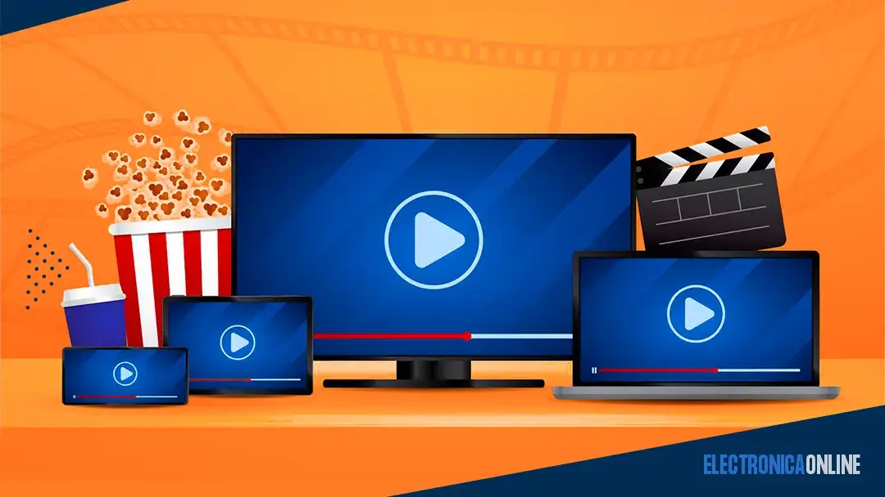
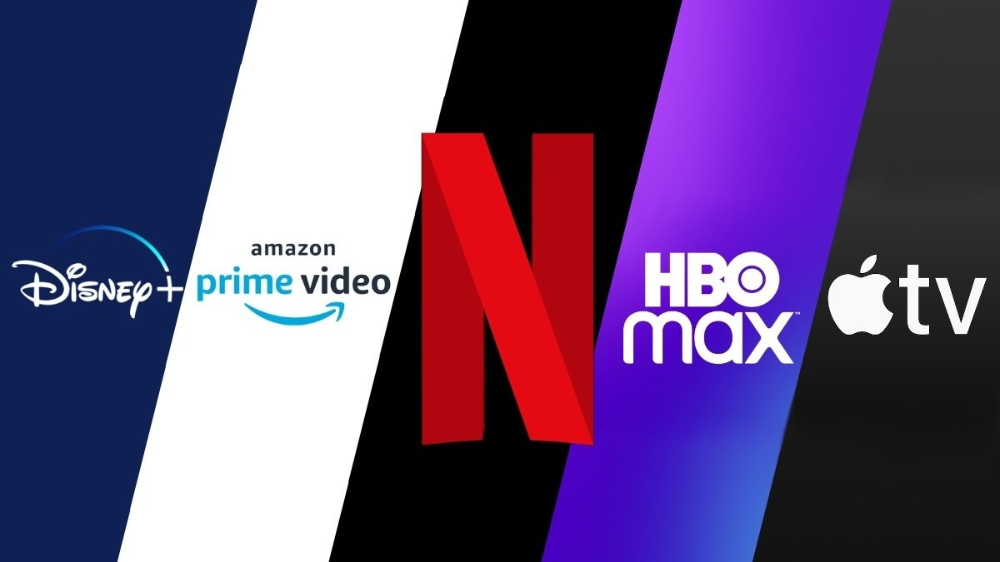
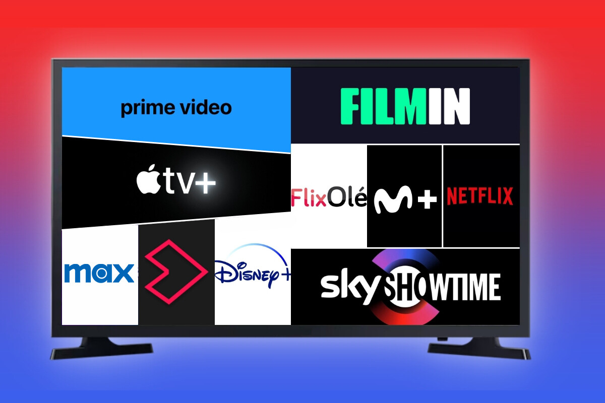

.png)
Concepto de Streaming
Samuel Fernando Morales Suarez
Samuel Fernando Morales Suarez

El streaming es una tecnología que permite la reproducción de contenido multimedia en tiempo real a través de internet, sin necesidad de descargar archivos completos en el dispositivo.
El streaming se ha convertido en una de las formas más populares de consumir contenido digital en la actualidad. Esta tecnología permite acceder a música, videos, películas, series y transmisiones en vivo de manera inmediata.
Su importancia radica en la facilidad de acceso y la rapidez con la que los usuarios pueden disfrutar del contenido. Plataformas como Netflix, YouTube o Spotify utilizan esta tecnología para ofrecer servicios eficientes y modernos.

El streaming es utilizado en múltiples áreas. Un ejemplo claro es el entretenimiento, donde plataformas como Netflix permiten ver series sin descarga. En la música, Spotify ofrece reproducción instantánea de canciones.
Otro caso importante es la educación, donde se transmiten clases en vivo. También en videojuegos, plataformas como Twitch permiten ver partidas en tiempo real.
| Streaming | Descarga |
|---|---|
| Reproducción inmediata | Debe descargarse primero |
| No ocupa espacio | Ocupa almacenamiento |
| Depende de internet | No necesita conexión después |

El streaming ha revolucionado la manera en que las personas consumen contenido digital. Su facilidad de uso y accesibilidad lo convierten en una herramienta fundamental en la industria tecnológica.
En la actualidad, el streaming no solo se limita al entretenimiento, sino que también es clave en la educación, comunicación y negocios digitales.